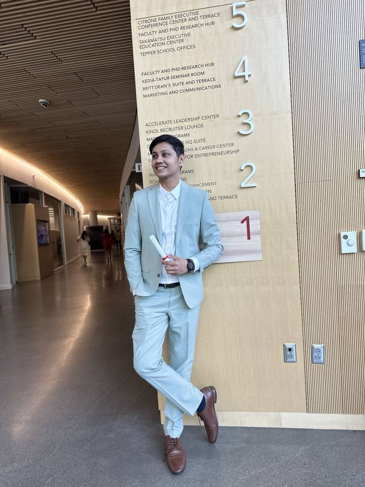
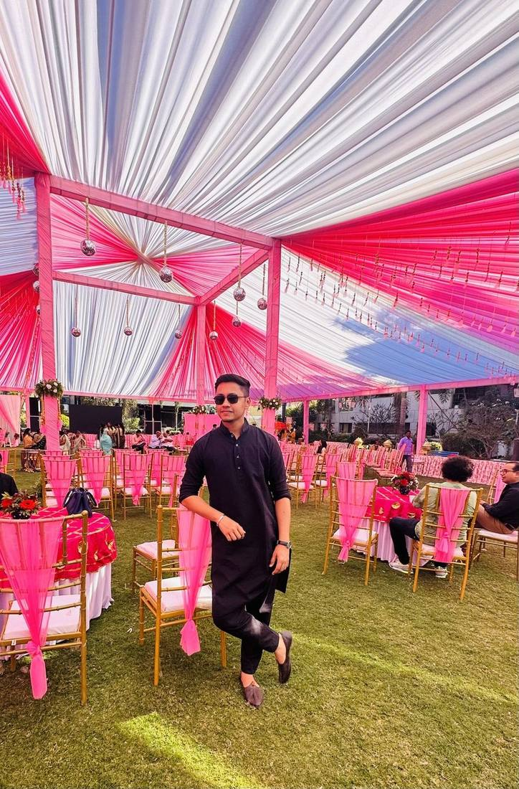
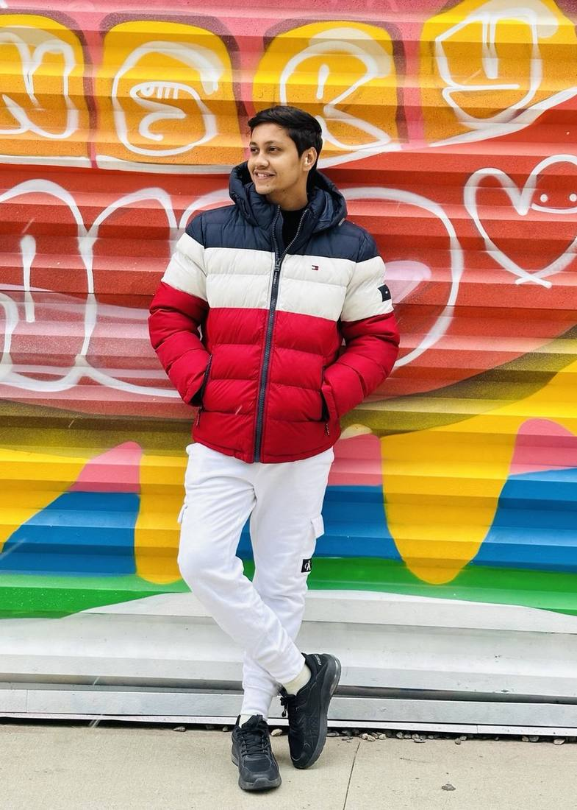
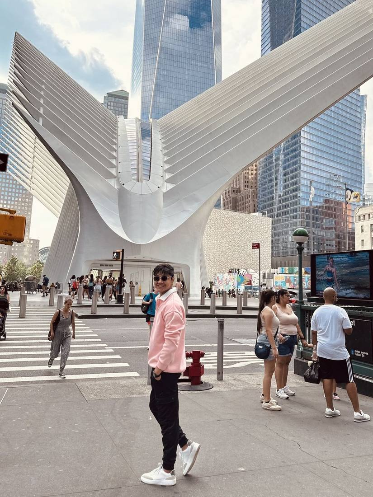

Comfort being visible
Product leadership is partly about showing up, presenting clearly and carrying conviction without dominating the room.
A small editorial corner for portraits, style and the confidence to occasionally be the subject instead of the person behind the camera.
A tightly edited set — different contexts, different energy, same person.




Product leadership is partly about showing up, presenting clearly and carrying conviction without dominating the room.
Composition, typography, clothing, framing — different medium, same sensitivity to what feels intentional.
The portfolio should feel like a person you might want on a team, not a database of shipped features.
“A professional identity should be clear. It does not have to be the only identity.”
In Front of the LensThere is still more work, thinking and life to explore.
Back to Productflix →Through My Lens